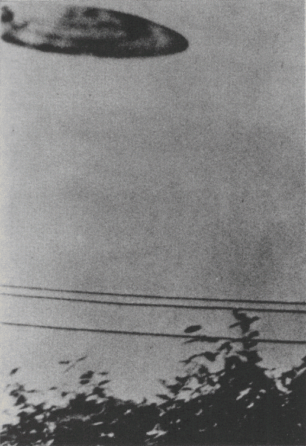
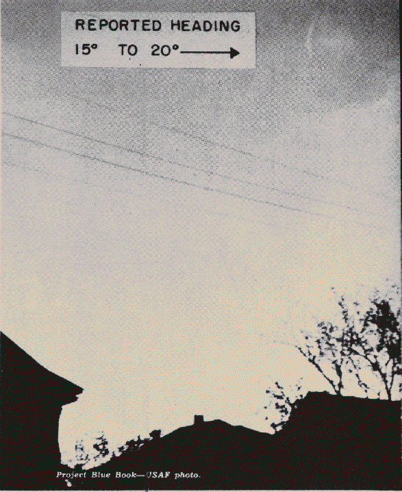

Des observateurs ont découvert que là où il y a une soucoupe, il y a généralement une ligne électrique pas loin
derrière. Tirent-ils leur puissance de ces lignes ? Où les soucoupes ont-elles été, comme certains le disent, la cause
de pannes d'électricité de régions ?
Michael Savage, fils de 15 ans d'un chirurgien de Californie, a saisi cet objet près de lignes électriques à San
Bernadino. Il a essayé d'obtenir un 2d cliché, mais dans sa hâte over-cranked l'appareil et tiré un négatif vide
Wide World

Notez les lignes électriques sous l'ovni brillant dans le ciel près du Centre de Développement Aérien d'Alamogordo
(Nouveau-Mexique). Pris par un employé gouvernemental, l'objet fut évalué comme un nuage
lenticulaire par l'Air Force. L'ovni a survolé 15 mn Projet Blue Book USAF
George Stock de Passaic (New Jersey) travaillait dans son jardin le
lorsque cette soucoupe en forme de dôme apparût. Parce qu'elle survolait les lignes
électriques avant de se diriger vers lui, il put obtenir 5 photos Michael Mann
Une lumière jaunâtre non-identifiée de forme elliptique (droite) apparaît sur le cliché pris par Charles Rogers,
journaliste photographe de Modesto (Californie), . La lumière
sembla rester stationnaire lorsqu'il la vit d'abord, et il installa alors son appareil sur le toit, laissait
l'obturateur ouvert et obtint ce résultat Projet Blue Book - USAF.
Une ligne électrique dans le coin inférieur gauche attire une fois de plsu l'attention de 2 disques brillants dans
le ciel nocturne au-dessus de Buenos Aires. La photo non retouchée fut prise avec une exposition de 1 mn. L'objet
s'en envolé au loin à grande vitesse UPI
Ira E. Maxey de Fort Worth (Texas) a soumis cette photo à l'Air Force en tant qu'ovni.
Pris , l'objet courbe au-dessus des lignes électriques avait une direction signalée de
15-20°. Evaluation de l'Air Force : éboutissure sur le negatif Projet Blue Book - USAF.

Lignes électriques loom up une nouvelle fois dans la célèbre photo du fermier Paul Trent d'un ovni dans sa ferme à
McMinnville (Oregon). La photo fut prise au Printemps 1950 UPI.